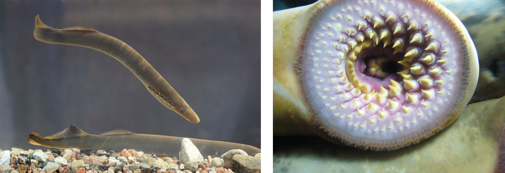

二、圆口纲的分类
圆口纲现存种类分属两个目：七鳃鳗目（Petromyzontiformes）和盲鳗目（Myxiniformes）。二者外形相似（鳗形、无颌、无成对附肢），但在脊椎骨、口部结构、鳃囊数目、生活史等方面差异显著。
近年分子系统学有学者主张将盲鳗独立为盲鳗纲，与狭义的圆口纲（七鳃鳗）并列，但传统分类仍将二者归入圆口纲。本笔记沿用传统"圆口纲含两目"的体系。

（一）七鳃鳗目（Petromyzontiformes）
代表动物：七鳃鳗（Lamprey，如海七鳃鳗 Petromyzon marinus、东北七鳃鳗 Lampetra morii）。分布于温带海洋及淡水，部分种类溯河洄游。
主要特征：
- 具脊椎骨雏形：脊索背面出现软骨椎弓（雏形脊椎骨），但无完整椎体，脊索仍终生存在。
- 口呈漏斗状（口漏斗）：位于头部腹面，漏斗内壁具角质齿和"舌"，用以吸附寄主并锉刮组织吸血。
- 外鳃孔7对：具7对鳃囊，每对鳃囊以独立的外鳃孔开口于体侧——"七鳃鳗"之名即由此而来（曾被误认为7个鳃+1只眼=7只"眼"）。
- 单鼻孔位于头背正中，鼻孔后方有透明区（松果眼）。
- 眼发达；内耳具2个半规管。
- 背鳍2个，尾为原形尾（歪尾型近原形）。
- 雌雄异体，体外受精；有变态发育（沙隐幼虫期）。
七鳃鳗的变态——沙隐幼虫（ammocoete）
七鳃鳗幼体称沙隐幼虫，是研究脊椎动物演化的重要材料。
- 形态：体小、半透明，口未特化（呈横裂），无成体角质齿和漏斗；咽部具内柱（与文昌鱼相似）。
- 生活：营底埋生活，以滤食为生，水流经口入咽过滤食物。
- 变态：经数年发育变态为成体——口发育为漏斗、内柱变为甲状腺、眼发育、鳃囊形成。
沙隐幼虫与文昌鱼在形态和生活方式上高度相似（半透明、滤食、具内柱），被视为脊椎动物祖先与头索动物亲缘关系的"重演"证据，是支持"重演律"（生物发生律）的经典案例。
（二）盲鳗目（Myxiniformes）
代表动物：盲鳗（Hagfish，如大西洋盲鳗 Myxine glutinosa、蒲氏粘盲鳗 Eptatretus burgeri）。全为海生，分布于温带海洋。
主要特征：
- 无脊椎骨：连雏形椎骨都没有，脊索终生存在，是脊椎动物中最"原始"者（甚至被认为介于脊索动物与脊椎动物之间）。
- 口呈吸盘式：位于身体前端，具肉质触须和角质齿，能吸附并钻入寄主体内。
- 寄生生活：常从鱼鳃或体侧钻入寄主体内，食其内脏肌肉，是真正的体内寄生。
- 鳃囊数目因种类而异（1～16对），外鳃孔常愈合成1对（少数种类多个）。
- 单鼻孔位于头前端，与口相通。
- 眼退化（埋于皮下，无晶体，故称"盲"鳗）；内耳仅1个半规管。
- 皮肤腺发达，受刺激时分泌大量黏液（黏液腺可瞬间产生大量黏液缠结捕食者）。
- 雌雄同体（部分种类），无变态发育（直接发育）。
（三）七鳃鳗与盲鳗的系统对比（核心考点）
| 特征 | 七鳃鳗目 | 盲鳗目 |
|---|---|---|
| 脊椎骨 | 有雏形脊椎骨（软骨椎弓） | 无脊椎骨（连雏形也无） |
| 脊索 | 终生存在 | 终生存在 |
| 鼻孔与鼻垂体管 | 单鼻孔位于头背正中，具鼻垂体管通垂体 | 单鼻孔位于头前端，与口腔相通，无鼻垂体管 |
| 口部结构 | 口漏斗（角质齿+舌） | 吸盘式口（触须+角质齿） |
| 眼 | 发达 | 退化（埋于皮下，无晶体） |
| 内耳半规管 | 2个 | 1个 |
| 鳃囊/外鳃孔 | 7对鳃囊，7对外鳃孔 | 1～16对鳃囊，外鳃孔常愈合为1对 |
| 背鳍 | 2个 | 不明显或退化 |
| 黏液腺 | 不发达 | 极发达（防御性大量黏液） |
| 营养方式 | 半寄生（吸附吸血） | 寄生（钻入体内食组织） |
| 生殖 | 雌雄异体，体外受精 | 雌雄同体（部分），直接发育 |
| 变态发育 | 有变态（沙隐幼虫期） | 无变态（直接发育） |
| 生境 | 海洋及淡水（有溯河洄游） | 海洋（底栖） |
| 原始程度 | 较盲鳗高等 | 最原始（甚至近脊索动物） |
（四）圆口纲两目的进化意义
七鳃鳗和盲鳗作为无颌类的现存代表，分别揭示了脊椎动物演化的不同侧面：
- 七鳃鳗：具雏形脊椎骨、口漏斗、变态发育，展示了脊椎骨从无到有的过渡；其沙隐幼虫与文昌鱼相似，是研究脊椎动物起源与重演律的关键。
- 盲鳗：无脊椎骨、眼退化、单半规管，保留了更多脊索动物祖先的原始特征，处于脊索动物向脊椎动物过渡的边缘，是探讨"脊椎动物起源阈值"的重要类群。
二者共同构成现存无颌类，与已灭绝的甲胄鱼（Ostracoderm）等古无颌类一道，勾勒出脊椎动物早期演化的图景：从无颌到有颌、从无成对附肢到具偶鳍/四肢，是脊椎动物演化的主线。
本节小结
1. 圆口纲分两目：七鳃鳗目与盲鳗目，均为无颌、鳃形、寄生/半寄生水生动物。
2. 七鳃鳗：有雏形脊椎骨、口漏斗、外鳃孔7对、眼发达、2个半规管、雌雄异体、有变态（沙隐幼虫）。
3. 盲鳗：无脊椎骨、吸盘式口、外鳃孔愈合（鳃囊1～16对）、眼退化、1个半规管、雌雄同体、无变态、黏液腺发达。
4. 鉴别核心：有无雏形脊椎骨 + 口部结构 + 外鳃孔数目 + 有无变态。
5. 沙隐幼虫形似文昌鱼 → 重演律经典证据，提示脊椎动物与头索动物近缘。
6. 盲鳗最原始（甚至近脊索动物），七鳃鳗展示脊椎骨"从无到有"的过渡。
7. 圆口纲为现存无颌类，与古甲胄鱼共同勾勒脊椎动物早期演化主线（无颌→有颌）。